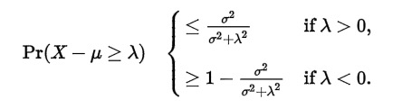
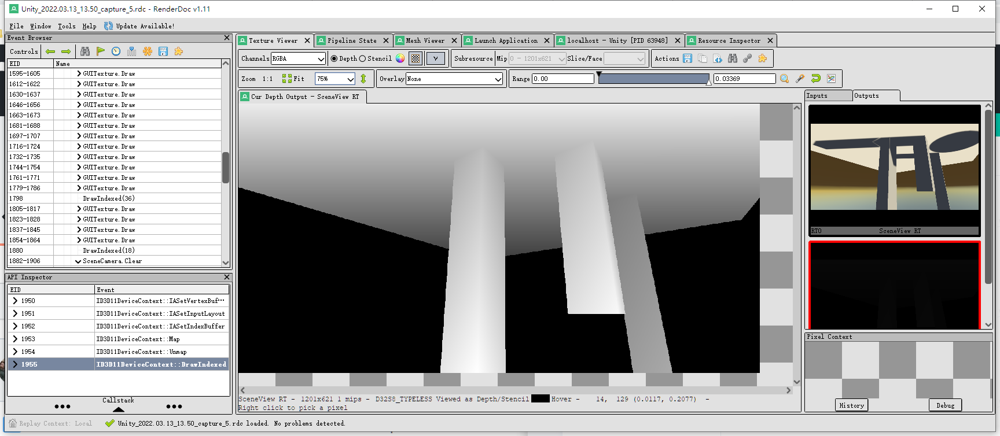
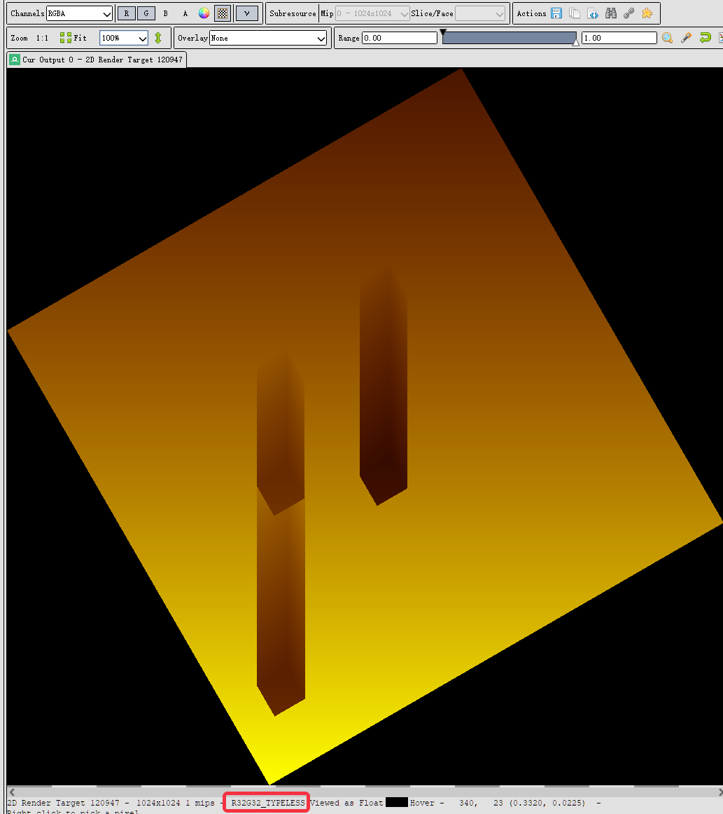
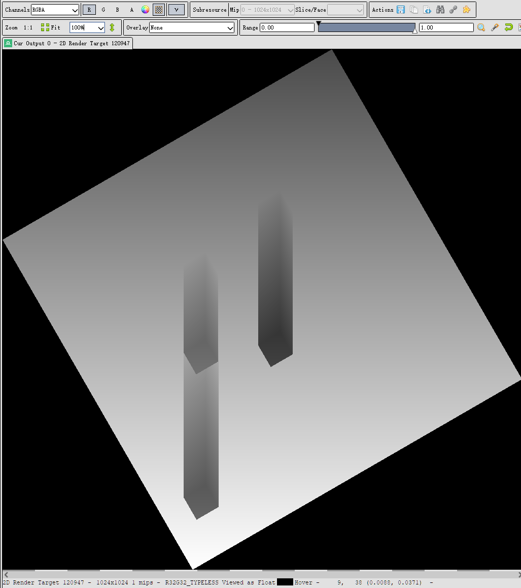
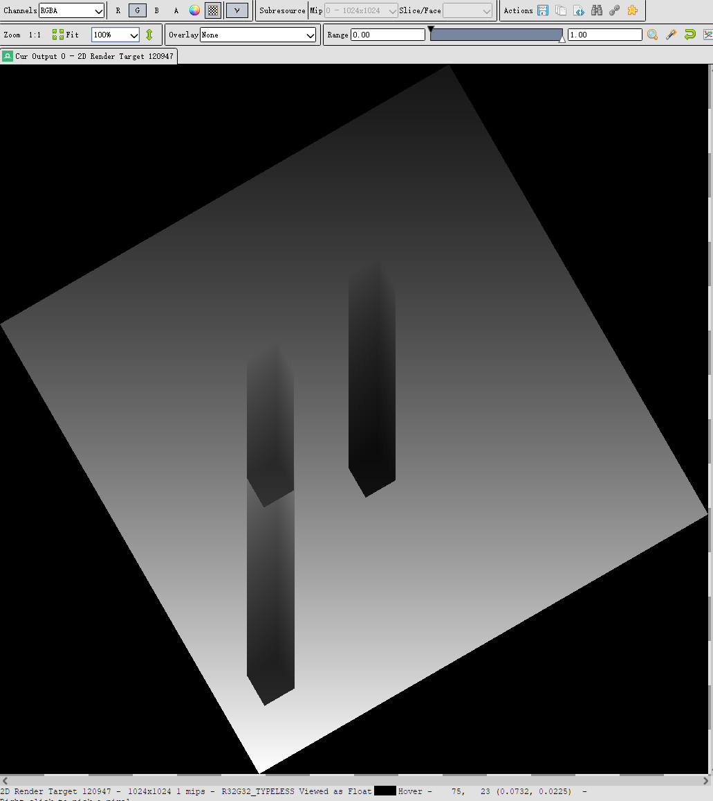
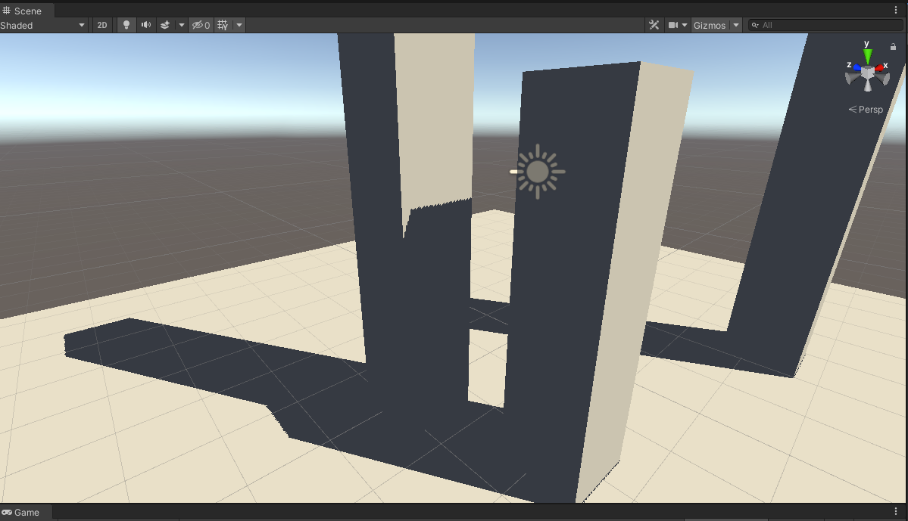
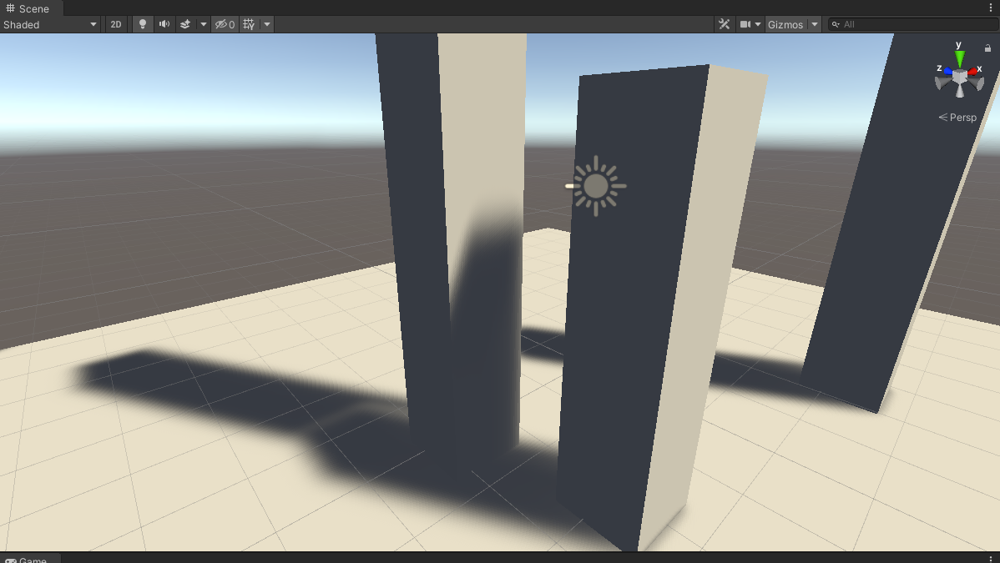
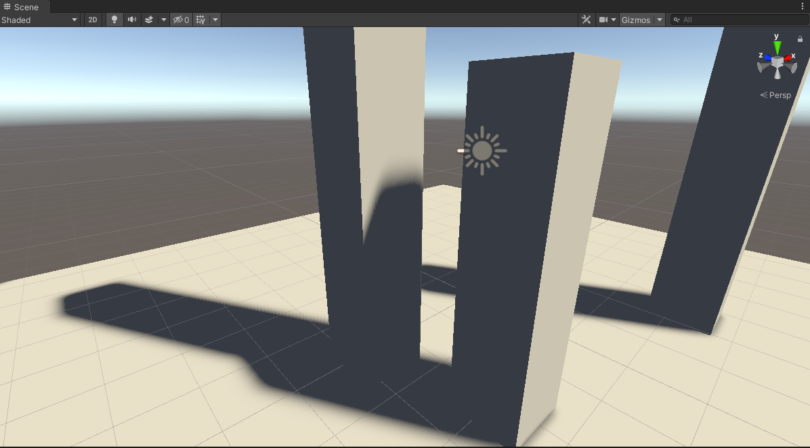
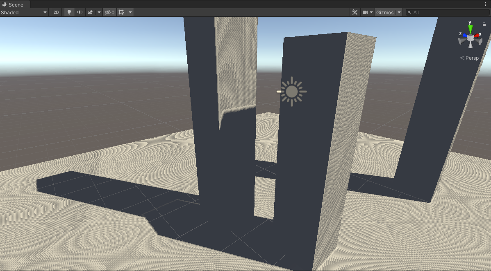

要理解方差阴影贴图的来龙去脉，必须先深刻理解概率论中的几个概念：
- 矩(Moment)
- 数学期望(Mean)
- 方差(Variance)
- 马可夫不等式 (Markov's Inequality)
- 切比雪夫不等式 (Chebyshev's inequality)
- 切比雪夫不等式的one-tailed版本 (one-tailed version of Chebyshev's inequality)
相关数学概念
矩(Moment)
https://en.wikipedia.org/wiki/Moment_(mathematics)
给定关于实变量x、常数c的实值连续函数f(x)，它的n阶矩（n-th moment)的公式是：
\[ \mu ^{n} = \int _{-\infty }^{ +\infty } (x - c)^{n} f(x) dx \]
数学期望(Mean)
当c = 0，n = 1时，上述公式变成：
\[ \mu = \int _{-\infty }^{ +\infty } x f(x) dx \]
这也就是数学期望(Mean)的积分公式。
方差(Variance)
当\(c = \mu\)时，n阶矩可称为n阶中心矩；当\(c = \mu，n = 2\)时，2阶中心矩的公式为：
\[ \mu ^{2} = \int _{-\infty }^{ +\infty } (x - \mu )^{ 2 } f(x) dx \]
这其实就是方差(Variance)的积分公式。下面作简单推导。
方差的定义式为：
\[ Var(X) = E[(X - \mu)^{2}] = E[(X - E[X])^{2}] = \sigma ^{2} \]
可以推出：
\[ Var(X) = E[X^{2} - 2 X E[X] + E[X]^{2} ] \]
\[ = E[X^{2}] - 2 E[X] E[X] + E[X]^{2} \]
\[ = E[X^{2}] - E[X]^{2} \]
而2阶中心矩公式可以推出：
\[ \int (x - \mu )^{ 2 } f(x) dx \]
\[ = \int x^{ 2 } f(x) dx - 2\mu \int x f(x) dx + \int \mu ^{ 2 } f(x) dx \]
\[ = \int x^{ 2 } f(x) dx - 2\mu \cdot \mu + \mu ^{ 2 } \]
\[ = \int x^{ 2 } f(x) dx - \mu ^{ 2 } \]
\[ =E[X^{ 2 }] - E[X] ^{ 2 } \]
马可夫不等式 (Markov's Inequality)
设X是非负的随机变量，且有a > 0，那么X大于等于a的概率不超过X的数学期望除以a：
\[ P _{ X \geq a } \leq \frac { E[X] }{ a } \]
（Note：这里的P是指概率）
证明：
证明前需要先理解一个概念：示性函数（Indicator）。对于任意事件e，当e发生时，\( I _{e} = 1\)， 当E没发生时，\( I _{e} = 0\)。
那么把\( X \geq a \)当作一个事件e，当e发生时，有：
\[ I _{ X \geq a } = 1 \]
\[ a I _{ X \geq a } \leq X \]
两边同时变成数学期望，不等式依然成立：
\[ E[a I _{ X \geq a }] \leq E[X] \]
又因为数学期望的线性关系，有：
\[ E[a I _{ X \geq a }] = a \cdot E[I _{ X \geq a }] \]
又因为函数\( I _{ X \geq a } \)的取值只有2种，所以可直接得到：
\[ a \cdot E[I _{ X \geq a }] = a \cdot ( 1\cdot P _{ X \geq a } + 0\cdot P _{ X \lt a } ) \]
\[ = a \cdot P _{ X \geq a } \]
综上，就得到了：
\[ a \cdot P _{ X \geq a } \leq E[X] \]
\[ P _{ X \geq a } \leq \frac { E[X] }{ a } \]
切比雪夫不等式 (Chebyshev's inequality)
设有随机变量X以及它的数学期望\(\mu \) 、有限且不等于0的方差\( \sigma ^{2} \)，对于任意>0的实数k，以下不等式成立：
\[ P _{ | X - \mu | \geq k\sigma } \leq \frac { 1 }{ k^{2} } \]
（Note：这里的P是指概率）
这就是切比雪夫不等式。其中，因为概率P永远小于等于1，所以k值要大于1这个不等式才有意义。
证明：
设有随机变量\( Y = (X - \mu )^{2} \) 以及 \( a = (k\sigma )^{2} \)，代入马可夫不等式后：
\[ P _{ Y \geq a } \leq \frac { E[Y] }{ a } \]
\[ P _{ (X - \mu )^{2} \geq (k\sigma )^{2} } \leq \frac { E[(X - \mu )^{2}] }{ (k\sigma )^{2} } \]
回顾下方差公式：
\[ Var(X) = E[(X - \mu)^{2}] = \sigma ^{2} \]
显然有：
\[ P _{ (X - \mu )^{2} \geq (k\sigma )^{2} } \leq \frac { E[(X - \mu )^{2}] }{ (k\sigma )^{2} } = \frac { \sigma ^{2} }{ (k\sigma )^{2} } = \frac { 1 }{ k^{2} } \]
左边的式子可以进一步简化：
\[ (X - \mu )^{2} \geq (k\sigma )^{2} \]
\[ |X - \mu | \geq k\sigma \]
（右边没有绝对值是因为有前提条件k>0，即使标准差\(\sigma < 0 \)该等式依然成立 )
于是切比雪夫不等式成立：
\[ P _{ | X - \mu | \geq k\sigma } \leq \frac { 1 }{ k^{2} } \]
切比雪夫不等式的one-tailed版本
切比雪夫不等式的one-tailed版本其实就是坎泰利不等式Cantelli's inequality。坎泰利不等式公式如下：

(from wiki，Pr等价于上文的P）
而切比雪夫不等式的one-tailed版本如下：
\[ P _{ X - \mu \geq t } \leq \frac { \sigma ^{2} }{ \sigma ^{2} + t ^{2} } ，t > 0 \]
一模一样的。
证明：
要证明one-tailed公式，要用到马可夫不等式。首先定义\(Y = X - \mu \)，那么就有\(E[Y] = E[X - \mu ] = E[X]- E[\mu ] = \mu - \mu = 0\)，以及：\( Var[Y] = Var[X - \mu ] = Var[X] - Var[\mu ] = Var[X] - 0 = Var[X] \)。
于是：
\[ P _{ Y \geq t } = P _{ Y + \mu \geq t + \mu } \leq P _{ (Y + \mu)^{2} \geq (t + \mu)^{2} } \]
这时候用上马可夫不等式 \( P _{ X \geq a } \leq \frac { E[X] }{ a } \)，得到：
\[ P _{ (Y + \mu)^{2} \geq (t + \mu)^{2} } \leq \frac { E[(Y + \mu)^{2}] }{ (t + \mu)^{2} } \]
再用上方差公式：
\[ E[(Y + \mu)^{2}] = Var[Y + \mu] + E[Y + \mu]^{2} \]
\[ = Var[Y] + Var[\mu] + E[Y + \mu]^{2} \]
\[ = \sigma ^{2} + 0 + (E[Y] + E[\mu])^{2} \]
\[ = \sigma ^{2} + (0 + E[\mu])^{2} \]
\[ = \sigma ^{2} + \mu ^{2} \]
所以有：
\[ P _{ Y \geq t } \leq \frac { \sigma ^{2} + \mu ^{2} }{ (t + \mu)^{2} } \]
接着令 \( \phi(\mu ) = \frac { \sigma ^{2} + \mu ^{2} }{ (t + \mu)^{2} } \)，求导\( \phi '(\mu ) = 0\)时的\( \mu \)值。这个导数算起来比较复杂，我找了个在线导数计算工具来辅助下（这不是广告）。
先进入http://zh.numberempire.com/derivativecalculator.php，输入： (a^2+x^2)/((b+x)^2)，得到导数公式： (2*b*x-2*a^2)/(x^3+3*b*x^2+3*b^2*x+b^3)。
a就是\( \sigma \)，b就是t，x就是\(\mu \)，把这个式子弄成latex：
\[ \phi '(\mu ) = \frac { 2bx - 2a^{2} }{ x^{3} + 3bx^{2} + 3b^{2}x + b^{3} } = 0 \]
这个方程也是复杂，继续用工具来算就好了。
进入http://zh.numberempire.com/equationsolver.php，
输入：(2*b*x-2*a^2)/(x^3+3*b*x^2+3*b^2*x+b^3) = 0，
得到：\( x = \frac { a^{2} } { b } \) ，即：
\[ \mu = \frac { \sigma ^{2} } { t } \]
也就是说当\( \mu = \frac { \sigma ^{2} } { t } \)时，\( \phi(\mu ) \)取得最小值。而又因为对任意的\( \mu \)，概率\( P _{ Y \geq t } \) 都不超过\( \phi(\mu ) \)，所以原先的不等式可以进一步简化成：
\[ P _{ Y \geq t } \leq \frac { \sigma ^{2} + \mu_{ * } ^{2} }{ (t + \mu _{ * } )^{2} } = \frac { \sigma ^{2} + (\frac { \sigma ^{2} } { t }) ^{2} }{ (t + \frac { \sigma ^{2} } { t } )^{2} } \]
右边的式子继续简化；
\[ \frac { \sigma ^{2} + (\frac { \sigma ^{2} } { t }) ^{2} }{ (t + \frac { \sigma ^{2} } { t } )^{2} } = \frac { \frac { \sigma ^{2}t^{2} +\sigma ^{4} } { t^{2} } } { \frac { (t^{2} + \sigma ^{2})^{2} } { t^{2} } } = \frac { \sigma ^{2}t^{2} +\sigma ^{4} } { (t^{2} + \sigma ^{2})^{2} } = \frac { \sigma ^{2} } { t^{2} + \sigma ^{2} } \]
所以：
\[ P _{ Y \geq t } = P _{ X - \mu \geq t } \leq \frac { \sigma ^{2} } { t^{2} + \sigma ^{2} } \]
得证。
zbuffer范围问题
在继续分析前，先暂停一下，让我们搞清楚depth buffer的平台差异问题、reverse z问题、自定义depth问题。
平台差异问题
根据unity的说明文档，可以知道不同的图形API，深度范围是不一样的：
- DX、Metal、主机平台，clip space的depth范围是[0, 1]，0是near，1是far
- GL、GL ES，clip space的depth范围是[-1, 1]，-1是near，1是far
从这2点可见，一般靠近摄像机的物体深度会偏黑，远离摄像机的物体深度会偏白。越近越黑，越远越白。
reverse z问题
在下一节使用的demo里，经过截帧，发现事实并不是如此：

可见，该demo使用的是DX11，且zbufer是越近越白，越远越黑。
这个是因为unity使用DX11时，默认开启了一种叫reverse z的优化技术。
因为clip space的深度是非线性的且float是越接近0精度越高，所以reverse z应运而生，reverse z可以减弱中远距离的z fighting问题。具体做法就是让near变成1，far变成0。
（题外话一下，根据平台差异性第二点，GL环境下，depth范围是[-1，1]，是不能直接应用reverse z的。所以这个技术有一定平台限制性，还需要一些特殊处理才能用到GL中）
reverse z开启时，depth范围变成[1, 0]，depth compare func变成Greater Equal，即新的深度大于已有深度时，才能通过深度测试并进行绘制，并把更大的深度值写入z buffer。
自定义depth问题
第三是自定义depth问题。既然默认的z buffer有平台差异，那么自定义一个depth RT，自己控制depth范围，不是很方便？确实是可以的，这个demo确实是这样做的。
为了不引起混乱，在此总结一下：下文所讨论的代码实现，基于unity DX11环境的VSM，且打开了reverse z，默认的depth RT范围是非传统的[1, 0]，自定义VSM depth的范围是[0, 1]。
方差阴影贴图(VSM)
生成VSM，相比SSM(Standard Shadow Map)，除了把深度d存到深度图，还要多存一个d*d。似乎看起来有点蠢，明明有d了，要用d平方不就是运算的时候d*d就行了嘛。其实VSM的原理还得结合一些硬件知识来理解。
相比SSM是单通道贴图，VSM则是双通道贴图，并且VSM在用于光照计算前，允许做纹理过滤，即模糊化（VSM能实现软阴影的关键之处）。而SSM是万万不能模糊的，不然做深度测试会出大问题。
VSM把zbuffer模糊后，d和d平方的值就在一定范围内做了偏移。那么我们可以设：
模糊前的深度d和d平方分别为x和\( x^{2} \)
模糊后的深度d和d平方分别为一阶矩M1（x的数学期望）和一阶矩M2（\( x^{2} \)的数学期望）
再用上前面给出的方差公式：
\[ Var(X) = E[X^{2}] - E[X]^{2} \]
所以对于模糊前的x（真实深度），我们可以求出它的数学期望和方差：
\[ \mu = E(x) = M1 \]
\[ \sigma ^{2} = Var(x) = E[x^{2}] - E[x]^{2} = M2 - M1^{2} \]
到了这里，VSM的原理已经相当清楚了：先是存了原始的深度x和x平方，然后又对x和x平方做了一些坏事：把x和x平方稍微搅浑（模糊）了，模糊了后想恢复原始的x是不可能了，但是我们可以利用模糊后的x和x平方（一、二阶矩），算出x的方差，再结合模糊后的x（x的数学期望，一阶矩），就能对原始的x做概率估计。模糊操作可以用后处理或compute shader实现。
VSM的实现还需要用上切比雪夫不等式的one-tailed版本。首先拿出该公式：
\[ P _{ X - \mu \geq t } \leq \frac { \sigma ^{2} }{ \sigma ^{2} + t ^{2} } ，t > 0 \]
设\( t' = t - \mu ，t > \mu > 0 \)，代入上式：
\[ P _{ X - \mu \geq t' } \leq \frac { \sigma ^{2} }{ \sigma ^{2} + t' ^{2} } \]
\[ P _{ X - \mu \geq t - \mu } \leq \frac { \sigma ^{2} }{ \sigma ^{2} + (t - \mu) ^{2} } \]
\[ P _{ X \geq t } \leq \frac { \sigma ^{2} }{ \sigma ^{2} + (t - \mu) ^{2} } \]
（在Variance Shadow Maps 论文中就会看到这个不等式）
这个公式很重要，会直接应用到shader中。
假定我们已经画出了VSM阴影贴图，此时我们要在真正的rendering pass的某个fragment shader里对某一个fragment做软阴影计算，不像SSM可以直接做深度比较，在VSM环境下，只能知道fragment 有概率被遮挡 。
此时可设：
- fragment在light view space下的精确深度为t
- VSM里所对应的uv位置的未模糊前的深度为X（即最靠近光源的遮挡物深度）
因为上文已经说了VSM自定义depth的范围是[0, 1]，那么可知：
- 当X > t时，遮挡物的深度大于fragment的深度，fragment在遮挡物前面，没有阴影
- 当X < t时，遮挡物的深度小于fragment的深度，fragment在遮挡物后面，有阴影
那么\( P _{ X \geq t } \)这个东西的意思就是，在light view space下，fragment没有被遮挡的概率。
再设一个变量叫阴影强度（shadowIntensity），有以下关系式：
\[ shadowIntensity = 1 - P _{ X \geq t } \]
shadowIntensity的本质就是fragment被遮挡的概率。
下面是具体算法和工程实现部分。
首先把fragPos转换到light space下，获得clip space pos再转成uv坐标，就可以采样VSM深度图的depth值（模糊后），称为\(d_{1}\)。而fragPos当前在light place的精确深度则称为\(d_{2} \)。
把\(d_{2} \)代入t，就可以明确：
fragment没有被遮挡的概率 \( P _{ X \geq d_{2} } \) 小于等于 \( \frac { \sigma ^{2} }{ \sigma ^{2} + (t - \mu) ^{2} } \)
再设\( P_{ X \geq d_{2} } \)为p，那么VSM 未模糊前的d 的数学期望可等于：
\[ \mu = E(X) = E(d) = p d_{2} + (1 - p)d_{1} \]
这个式子可以这样理解：
- 当p=1时，framgment 100%不被遮挡物遮挡，遮挡物深度期望值为\(d_{2}\)，即遮挡物深度必然大于等于fragment在light view space的深度
- 当p=0时，framgment 100%被遮挡物遮挡，遮挡物深度期望值为\(d_{1}\)，即等于VSM采样深度（模糊后），VSM变成了SSM
这个p虽然还不能被准确算出来，但基于这条d的数学期望公式，不等式右边的部分，即p的上界，已经可以继续化简了！这个上界究竟是什么东西呢？
先写出\(d^{2}\)的数学期望：
\[ E(x^{2}) = p d_{2}^{2} + (1 - p)d_{1}^{2} \]
于是d的方差为：
\[ \sigma ^{2} = E[x^{2}] - E[x]^{2} = p d_{2}^{2} + (1 - p)d_{1}^{2} - (p d_{2} + (1 - p)d_{1} )^{2} \]
\[ = p d_{2}^{2} + (1 - p)d_{1}^{2} - p^{2} d_{2}^{2} - 2p(1 - p)d_{1} d_{2} - (1 - p)^{2} d_{1} ^{2} \]
\[ = (p - p^{2}) d_{2}^{2} + (1 - p)(d_{1}^{2} - 2pd_{1} d_{2} - (1 - p)d_{1}^{2} ) \]
\[ = (p - p^{2}) d_{2}^{2} + (1 - p)(d_{1}^{2} - 2pd_{1} d_{2} - d_{1}^{2} + pd_{1}^{2} ) \]
\[ = (p - p^{2}) d_{2}^{2} + (1 - p)( - 2pd_{1} d_{2} + pd_{1}^{2} ) \]
\[ = (p - p^{2}) d_{2}^{2} + (p - p^{2})( - 2d_{1} d_{2} + d_{1}^{2} ) \]
\[ = (p - p^{2})(d_{2}^{2} - 2d_{1} d_{2} + d_{1}^{2} ) \]
\[ = (p - p^{2})(d_{2} - d_{1})^{2} \]
设p的上界（不等式右边部分）为\( p_{max} (d_{2}) \)，并把\( \mu 、\sigma ^{2} \)代入后化简：
\[ p \leq p_{max} (d_{2}) = \frac { \sigma ^{2} }{ \sigma ^{2} + (d_{2} - \mu) ^{2} } \]
\[ = \frac { (p - p^{2})(d_{2} - d_{1})^{2} }{ (p - p^{2})(d_{2} - d_{1})^{2} + ( p d_{2} + (1 - p)d_{1} - d_{2} ) ^{2} } \]
\[ = \frac { (p - p^{2})(d_{2} - d_{1})^{2} }{ (p - p^{2})(d_{2} - d_{1})^{2} +(1 - p) ^{2} (d_{2} - d_{1} ) ^{2} } \]
\[ = \frac { p - p^{2} }{ (p - p^{2}) +(1 - p) ^{2} } \]
\[ = \frac { p - p^{2} }{ (p - p^{2}) +(1 - p) ^{2} } \]
\[ = \frac { p - p^{2} }{ 1 - p } \]
\[ = p \]
也就是说，p的上界等于p本身 ！
总结一下。原始的切比雪夫不等式的one-tailed版本：
\[ P _{ X \geq t } \leq \frac { \sigma ^{2} }{ \sigma ^{2} + (t - \mu) ^{2} } \]
在VSM这个特殊场景下，不等式是：
\[ P _{ X \geq d_{2} } \leq \frac { \sigma ^{2} }{ \sigma ^{2} + (t - \mu) ^{2} } \]
根据以下假设：
\[ \mu = E(X) = E(d) = p d_{2} + (1 - p)d_{1} \]
我们推出了p的上界等于p：
\[ P _{ X \geq d_{2} } \leq p_{max} (d_{2}) = \frac { \sigma ^{2} }{ \sigma ^{2} + (t - \mu) ^{2} } = P _{ X \geq d_{2} } \]
这意味着我们直接算出了准确的p值，不等式变成了等式。Amazing！
知道p的公式后有什么用呢？上文已经说了p的含义：fragment没有被遮挡的概率。这不就可以用来估算阴影强度了嘛。
理论到此为止，剩下的就是工程问题了。
工程实现
如果你的工程里已经实现了Standard Shadow Map，那么只需要几个步骤即可实现基本的VSM：
- 把Shadow Map Buffer改为输出depth和depth平方到颜色buffer。可能需要先修改RT的创建代码，下面以OpenGL 4.x为例：
// 32位高精度双通道纹理 用来存moment1和moment2
glTexImage2D(GL_TEXTURE_2D, 0, GL_RG32F, width, height, 0, GL_RG, GL_FLOAT, NULL);
然后修改shadow map shader（在light位置画一遍场景）：
vs:
v2f vert(appdata v)
{
v2f o;
o.vertex = UnityObjectToClipPos(v.vertex);
o.uv = v.uv;
return o;
}
fixed4 frag(v2f i) : SV_Target
{
float depth = 1 - i.vertex.z; // DX11 reverse z范围是[1, 0], 这里自定义VSM depth范围到[0, 1]
depth = i.vertex.z;
float moment1 = depth;// 一阶矩
float moment2 = depth * depth;// 二阶矩
return float4(moment1, moment2, 0, 0);
}
debug下VSM：
rg通道一起输出：

只有r通道(moment1):

只有g通道(moment2):

注意到背景是黑色的，实际上应该改成白色：
//_shadowCam.backgroundColor = new Color(0, 0, 0, 0);
_shadowCam.backgroundColor = new Color(1, 1, 1, 1);
为什么黑色和白色都能work的原因应该是那些区域没有被采样到，就没事。
然后是应用的问题，需要修改lighting shader里的阴影计算代码：
// 我以前写的demo的代码
uniform sampler2D shadowMap;
// 这个函数是用来算出上文说的Pmax
float chebyshevUpperBound(sampler2D shadowMap, float d, vec2 coord)
{
vec2 moments = texture(shadowMap, coord).rg;
// Surface is fully lit. as the current fragment is before the light occluder
if (d <= moments.x)
return 1.0;
// The fragment is either in shadow or penumbra. We now use chebyshev's upperBound to check
// How likely this pixel is to be lit (p_max)
float variance = moments.y - (moments.x * moments.x);
//variance = max(variance, 0.000002);
variance = max(variance, 0.00002);
float d_minus_mean = d - moments.x;
float p_max = variance / (variance + d_minus_mean * d_minus_mean);
return p_max;
}
// 返回阴影百分比[0,1], 然后拿去乘以光照颜色即可
float ShadowCalculation_Dir(vec3 fragPos, Light light) {
vec4 fragPosLightSpace = light.lightPV * vec4(fragPos, 1.0);
// perform perspective divide
vec3 projCoords = fragPosLightSpace.xyz / fragPosLightSpace.w;
// transform to [0,1] range
projCoords = projCoords * 0.5 + 0.5;
float currentDepth = projCoords.z;
shadow = 1 - chebyshevUpperBound(shadowMap, currentDepth, projCoords.xy);
return shadow;
}
// 这是github demo的代码
fixed4 frag (v2f i) : COLOR
{
// COLOR
float4 color;
。。。
// SHADOWS
// get distance to lightPos
float4 lightSpacePos = mul(_LightMatrix, i.wPos);
float depth = lightSpacePos.z / _ShadowTexScale.z;
float2 uv;
。。。
float4 samp = tex2D(_ShadowTex, uv);
// E(x) and E(x^2)
float x = samp.r;
float x2 = samp.g;
float var = x2 - x*x;
// calculate our initial probability based on the basic depths
// if our depth is closer than x, then the fragment has a 100%
// probability of being lit (p=1)
float p = depth <= x; // 这里有点问题，这个x已经是模糊后的
float delta = depth - x;
float p_max = var / (var + delta*delta); // 概率上界
// To alleviate the light bleeding, expand the shadows to fill in the gaps 处理漏光
float amount = _VarianceShadowExpansion;
p_max = clamp( (p_max - amount) / (1 - amount), 0, 1);
shadowIntensity = 1 - max(p, p_max); // 1 - 没有被遮挡的概率 = 遮挡的概率 = 阴影强度
color.xyz *= 1 - shadowIntensity * _MaxShadowIntensity; // 阴影强度越接近1，color越接近黑色
color.xyz += UNITY_LIGHTMODEL_AMBIENT.xyz;
return color;
}
最终demo效果
_VarianceShadowExpansion为0、关闭VSM blur：

_VarianceShadowExpansion为0、VSM做50次blur：

_VarianceShadowExpansion为0.213、VSM做50次blur：

可见_VarianceShadowExpansion值可以解决漏光问题。
把
shadowIntensity = 1 - max(p, p_max);
改为：
shadowIntensity = 1 - p_max;
并把blur次数改为1，出现了acne：

所以demo的float p = depth <= x;可以解决acne问题。
博主将十分感谢对本文章的任意金额的打赏^_^